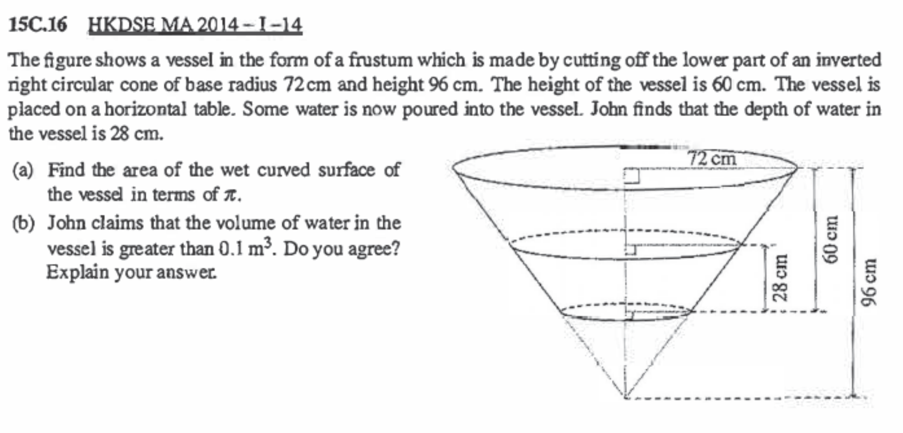

Problem Statement
A vessel in the form of a frustum is made by cutting off the lower part of an inverted right circular cone of base radius \(72\text{ cm}\) and height \(96\text{ cm}\). The height of the vessel is \(60\text{ cm}\). The vessel is placed on a horizontal table. Some water is poured into the vessel. The depth of water in the vessel is \(28\text{ cm}\).
GIVEN INFORMATION
Questions
(a) Find the area of the wet curved surface of the vessel in terms of \(\pi\).
(b) John claims that the volume of water in the vessel is greater than \(0.1\text{ m}^3\). Do you agree? Explain your answer.
Part (a): Wet Curved Surface Area
Cross-section of the frustum vessel with water — the shaded cone below is the part cut off (Part (a) Step 1).
At the water level (\(h = 28\text{ cm}\)): $$r(28) = 27 + \frac{3}{4} \times 28 = 27 + 21 = 48\text{ cm}$$
Here \(r_1 = 27\text{ cm}\), \(r_2 = 48\text{ cm}\), \(s = 35\text{ cm}\): $$\text{CSA} = \pi(27 + 48) \times 35 = \pi \times 75 \times 35$$
Answer (a)
\(\text{Wet curved surface area} = 2625\pi\text{ cm}^2\)
Part (b): Volume of Water — Agree or Disagree?
The water itself forms a frustum — bottom radius 27 cm, top radius 48 cm at the water level, height 28 cm.
\(\bullet\) Bottom radius \(r = 27\text{ cm}\) (same as vessel bottom)
\(\bullet\) Top radius \(R = 48\text{ cm}\) (radius at water level)
\(\bullet\) Height \(h = 28\text{ cm}\)
Convert to \(\text{m}^3\) (\(1\text{ m}^3 = 10^6\text{ cm}^3\)): $$V = \frac{40404\pi}{10^6}\text{ m}^3 = 0.040404\pi\text{ m}^3$$ $$\approx 0.040404 \times 3.14159 \approx 0.1269\text{ m}^3$$
Answer (b)
Since \(V \approx 0.127\text{ m}^3 > 0.1\text{ m}^3\),
We agree with John.
CROSS-SECTION DIAGRAM
Cross-sectional view of the frustum vessel with water